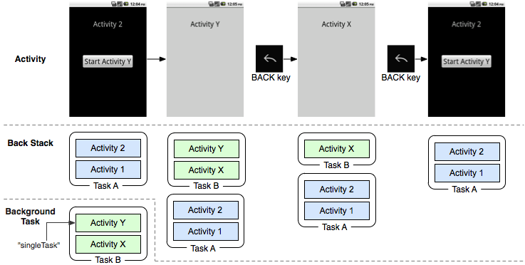

Activity 学习
写在前面的
结束了前段时间，从app流量出发的分析方式学习，现在开始进入正向的分析流程——即从Android暴露的四大组件入手，分析其中的逻辑与潜在的问题。从MIUI上找了一个APK，查找了其中暴露的组件，分析了一下发现，由于对四大组件不够熟悉加上jadx反编译出来的代码，许多变量名称都要靠猜，于是，决定先学习一下Android的四大组件。磨刀不误砍柴工额
主要参考自《Android 第一行代码》和瘦瘦14年的blog备份
Activity 的生命周期

从上面这个图片中可以很好的了解Activity的生命周期，可以看出在Activity的一次生命周期中，可以归类为以下几种状态：
- 运行态：此时Activity位于back stack的顶部；系统不会回收这一部分的资源（除非系统崩掉了）
- 暂停态：此时Activity不在位于back stack的最顶部，但是Activity的内容仍可见，这种情况多见于一些非全页面铺满的Activity转换过程中；由于Activity仍为可见状态，系统仍不希望回收这一部分的内存资源
- 停止态：此时Activity不在位于back stack的最顶部，且Activity内容不可见；此时如果其他位置急需内存资源的时候会回收此处的资源
- 销毁态：此时Activity已经不在back stack中。系统会快速的回收这个部分的资源。
AS编写Activity
创建过程
使用AS创建一个项目，等待Gradle更新完毕以后，即可在想要创建的包目录下，右键->New->Activity中选择自己想要创建的Activity。
ps：值得注意的是，我在没次创建Gradle，自动下载一些内容的时候总是会报错，这一般是下载采用的https链接证书不通过的问题。解决方案有两个：1. 手动下载到指定目录，然后重启AS；2. 将下载链接想办法改为http请求。
当创建完成一个Activity以后，会自动创建一个编写功能的Java文件，一个XML的资源文件，并将本Activity写入AndroidManifest.xml文件中，其中：
- Java文件实现Activity的具体功能，在onCreate()中会加载相应的XML资源文件。一般情况下，每个Activity都会对应一个或是多个XML资源文件。
- XML资源文件定义这本页面的布局，包括按键之类的。通过对不同标签分配ID，在Java文件中就可以使用这些ID来确定一些资源的位置，以此来完成一些时间的响应。
示例代码：MainActivity.java
1 | public class MainActivity extends AppCompatActivity { |
如果需要加入菜单（Menu）等功能也可以通过Override相关函数来实现，如：
1 |
|
Activity 启动方式
对于主Activity(就是打开app加载的Activity，我也不知道这么叫准确不，意思明了就成)，在创建的时候会有Launcher Activity的选项可以设置，也可以通过在AndroidManifest.xml文件中的android.intent.action.MAIN标识来定义，举个栗子：
1 | <activity |
对于其他的Activity在启动的时候，就需要使用Intent来完成了，启动方式主要分为两种，隐式启动和显式启动。
Intent完成显式启动
示例代码如下：
1 | Intent intent = new Intent(this, ExampleActivity.class); |
new一个Intent，参数分别为thisActivity.this和targetActivity.class即可完成向指定Activity跳转的功能。瘦瘦建议：私有Activity推荐使用显示启动。(暂时不太确定为啥，猜想可能是被恶意的跳进私有Activity吧)
Intent完成隐式启动
通过显示启动的方式，只能完成指定的Activity的跳转，在很多情况下是不太方便的，于是Activity支持通过<action>等标签和限制完成一种模糊的Activity跳转。示例代码如下：
1 | Intent intent = new Intent('com.example.activitytest.ACTION_START'); |
通过这种启动方式，程序会自动去AndroidManifest.xml中寻找合适的Activity来响应这个跳转，同时也可以完成不同程序之间的Activity调用(比如说，跳转到微信付款之类的)。
这里有一个限制，就是想要使用隐式启动的方式，就必须在AndroidManifest.xml中配置Activity的action，data，category等信息。
Activity 之间的消息传递
创建Activity时的消息传递
在完成Activity A->B的切换过程中，无论是显式启动还是隐式启动都可以通过Intent来传递想要传送的数据，通过key-value的形式传递。举个栗子：
Activity A设置消息：
1 | Intent intent = new Intent("com.example.activitytest.ACTION_START"); |
Activity B接收消息:
1 |
|
Activity 推出时回传信息
通过startActivityForResult的启动方式，设置响应码，即可响应Activity返回回来的信息，通过OverrideonActivityResult函数来完成。举个栗子：
Activity B退出的时候(这里Override了一下Back键的函数)：
1 |
|
Activity A需要在startActivity的时候，使用类似代码：startActivityForResult(intent,200);,其中200的位置可以自己设置。同时Override掉onActivityResult函数
1 |
|
Activity onStop的数据恢复
在某些情况，如本Activity处于停止态，系统可能会将Activity的资源回收掉。当Activity再次onCreate唤醒的时候数据就会损失掉，为了避免关键性的数据会损失，可以通过onCreate函数的Bundle参数来存储信息，信息的存储依旧使用key-value的形式，下面是一个栗子:
1 | //关键信息备份 |
1 | //onCreate过程恢复数据 |
Activity 启动模式
Activity有四种加载模式：
- standard:默认行为。每次启动一个activity，系统都会在目标task新建一个实例。
- singleTop:如果目标activity的实例已经存在于目标task的栈顶，系统会直接使用该实例，并调用该activity的onNewIntent()（不会重新create）
- singleTask:在一个新任务的栈顶创建activity的实例。如果实例已经存在，系统会直接使用该实例，并pop掉back stack中目标Activity上方的Activity，调用该activity的onNewIntent()（不会重新create）;当指定taskAffinity的时候可能会跳转到新的Task中。
- singleInstance:和”singleTask”类似，但在目标activity的task中不会再运行其他的activity，在那个task中永远只有一个activity。
设置的位置在AndroidManifest.xml文件中activity元素的android:launchMode 属性：
1 | <activity android:name="ActB" android:launchMode="singleTask"></activity> |
贴个图，方便理解(虽然当时看了图也没理解)：

Activity 实际编写时的骚操作
在学习《第一行代码》的时候，提到了一些编写Activity的良好骚操作，在实际逆向过程中，可看到了这些操作的痕迹，于是。。。整理一下：
继承BaseActivity类
一般情况下，我们创建出来的Activity都是继承自AppCompatActivity类，在这个类中完成了一个Activity应该有的全部功能，我们写代码的时候只需要根据需求Override相关的函数即可，但是为了自己写起来方便，可以在加一层封装BaseActivity来完成一些如Log信息打印等操作。栗子代码如下：
1 | package com.example.activitytest; |
ActivityCollector
这个本质上就是写一个Activity管理器，方便一次性释放多个Activity，栗子代码如下：
1 | package com.example.activitytest; |
Reference
《Android 第一行代码》
瘦瘦的blog ： https://github.com/WooyunDota/DroidDrops/blob/master/2014/Android Activtity Security.md
https://developer.android.com/guide/components/activities.html